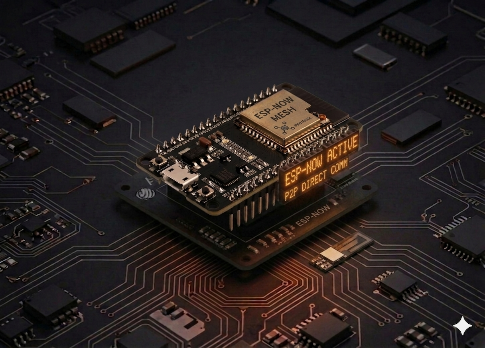

ESP-NOW Messaging
Direct wireless communication between two ESP32 boards over ESP-NOW — no router, no internet, sub-10 ms latency.
ESP-NOW communication between two ESP32 boards¶
Build a tiny point-to-point protocol between two ESP32 boards: one sends messages ("sender"), the other receives them ("receiver"). Everything happens without a Wi-Fi router and without an internet connection — the boards talk directly using ESP-NOW, an Espressif protocol layered on top of the Wi-Fi radio.

Description¶
ESP-NOW is a low-power protocol from Espressif that lets ESP32/ESP8266 boards exchange short packets (up to 250 bytes) directly, without associating to an AP. Compared to a classic HTTP/Wi-Fi setup it offers:
- Low latency — under 10 ms between send and receive.
- No infrastructure — no router, no password, no DHCP, no IPs.
- Low power — boards can sleep between packets.
- Up to 20 unicast peers at the same time.
Typical setup: identify each board's MAC address, register it as a peer on the other side, then use send() / recv() to move bytes around.
Components¶
| Component | Quantity |
|---|---|
| ESP32 board (DevKit V1 or similar) | 2 |
| USB cable for each board | 2 |
| MicroPython firmware on both boards | — |
No external parts are needed — the entire link runs over the ESP32's built-in radio.
Step 1: Read each board's MAC address¶
Before you can send anything, both boards must know each other's MAC address (6 bytes that uniquely identify the radio). Upload the script below to each board in turn, run it, and write the address down.
import network
wlan = network.WLAN(network.STA_IF)
wlan.active(True)
# Read the MAC as bytes
mac = wlan.config('mac')
# Human-readable format: aa:bb:cc:dd:ee:ff
mac_address = ':'.join('%02x' % b for b in mac)
print("MAC Address:", mac_address)
Typical output:
Note both addresses — the next steps use them as bytes literals (e.g. b'\x30\xae\xa4\x07\x0d\x64').
Quick conversion
30:ae:a4:07:0d:64 → b'\x30\xae\xa4\x07\x0d\x64'. Replace each : with \x and wrap in b'…'.
Step 2: Sender code¶
The sender ships a numbered message every second to the receiver's MAC. Replace receiver_mac with the address you read off the receiving board.
import network
import espnow
import time
# Print stats every 10 seconds
last_stats_time = time.time()
stats_interval = 10
# Wi-Fi in station mode — ESP-NOW needs the radio active, not an actual connection
sta = network.WLAN(network.STA_IF)
sta.active(True)
# sta.config(channel=1) # Force the channel if packets do not arrive
sta.disconnect()
# Initialize ESP-NOW
e = espnow.ESPNow()
try:
e.active(True)
except OSError as err:
print("Failed to initialize ESP-NOW:", err)
raise
# Receiver's MAC (replace with yours)
receiver_mac = b'\x30\xae\xa4\xf6\x7d\x4c'
# receiver_mac = b'\xff\xff\xff\xff\xff\xff' # broadcast to everyone
# Register the peer
try:
e.add_peer(receiver_mac)
except OSError as err:
print("Failed to add peer:", err)
raise
def print_stats():
stats = e.stats()
print("\nESP-NOW Statistics:")
print(f" Packets Sent: {stats[0]}")
print(f" Packets Delivered: {stats[1]}")
print(f" Packets Dropped (TX): {stats[2]}")
print(f" Packets Received: {stats[3]}")
print(f" Packets Dropped (RX): {stats[4]}")
message_count = 0
while True:
try:
message = f"Hello! ESP-NOW message #{message_count}"
try:
# Third arg True = wait for ACK
if e.send(receiver_mac, message, True):
print(f"Sent message: {message}")
else:
print("Failed to send message (send returned False)")
except OSError as err:
print(f"Failed to send message (OSError: {err})")
message_count += 1
if time.time() - last_stats_time >= stats_interval:
print_stats()
last_stats_time = time.time()
time.sleep(1)
except OSError as err:
print("Error:", err)
time.sleep(5)
except KeyboardInterrupt:
print("Stopping sender...")
e.active(False)
sta.active(False)
break
Step 3: Receiver code¶
The receiver listens for packets and prints them. Replace sender_mac with the sending board's address (only needed if you want to restrict accepted packets; for broadcast you do not need it).
import network
import espnow
import time
last_stats_time = time.time()
stats_interval = 10
sta = network.WLAN(network.STA_IF)
sta.active(True)
sta.config(channel=1) # Same channel as the sender
sta.disconnect()
e = espnow.ESPNow()
try:
e.active(True)
except OSError as err:
print("Failed to initialize ESP-NOW:", err)
raise
# Sender's MAC (optional — only needed for unicast with add_peer)
sender_mac = b'\x30\xae\xa4\x07\x0d\x64'
# For broadcast (b'\xff' * 6) do NOT add a peer
# try:
# e.add_peer(sender_mac)
# except OSError as err:
# print("Failed to add peer:", err)
# raise
def print_stats():
stats = e.stats()
print("\nESP-NOW Statistics:")
print(f" Packets Sent: {stats[0]}")
print(f" Packets Delivered: {stats[1]}")
print(f" Packets Dropped (TX): {stats[2]}")
print(f" Packets Received: {stats[3]}")
print(f" Packets Dropped (RX): {stats[4]}")
print("Listening for ESP-NOW messages...")
while True:
try:
# recv(timeout_ms) — returns (sender_mac, message) or (None, None) on timeout
host, msg = e.recv(10000)
if msg:
print(f"Received from {host.hex()}: {msg.decode()}")
if time.time() - last_stats_time >= stats_interval:
print_stats()
last_stats_time = time.time()
except OSError as err:
print("Error:", err)
time.sleep(5)
except KeyboardInterrupt:
print("Stopping receiver...")
e.active(False)
sta.active(False)
break
Running it¶
- On board A (receiver) — save the receiver code as
main.pyand power the board. - On board B (sender) — update
receiver_macwith board A's address, save asmain.py, and power it. - Open the serial console on board A (Thonny → Stop/Restart backend). You should see:
Listening for ESP-NOW messages...
Received from 30aea4070d64: Hello! ESP-NOW message #0
Received from 30aea4070d64: Hello! ESP-NOW message #1
Received from 30aea4070d64: Hello! ESP-NOW message #2
Quick API¶
| Call | Purpose |
|---|---|
espnow.ESPNow() + e.active(True) |
Initialize the ESP-NOW radio |
e.add_peer(mac) |
Register a recipient for unicast |
e.send(mac, msg, True) |
Send with ACK — returns True on delivery |
e.send(b'\xff'*6, msg) |
Broadcast to every board on the same channel |
e.recv(timeout_ms) |
Block until a packet arrives; returns (mac, msg) |
e.stats() |
Tuple of (sent, delivered, dropped_tx, received, dropped_rx) |
Sender and receiver must share the same Wi-Fi channel
If packets do not arrive, force the channel with sta.config(channel=1) on both boards before e.active(True). By default the ESP32 channel comes from the most recent Wi-Fi connection — it can differ between boards.
Troubleshooting¶
Sender shows 'Sent message' but receiver gets nothing
- Double-check the receiver MAC — a single wrong byte and the packet is silently dropped.
- Force the same Wi-Fi channel on both boards (
sta.config(channel=1)). - Move the boards closer — for debugging, keep them within 1 m.
- Check
e.stats()on the sender: ifPackets Deliveredstays 0 whilePackets Sentkeeps growing, the receiver is not ACKing.
OSError: ESP_ERR_ESPNOW_NOT_FOUND on send()
- The MAC is not registered as a peer. Call
e.add_peer(mac)before the first unicast send.
I want to send from several boards to a single one
- On the receiver run
e.recv(...)in a loop — it accepts packets from anyone who sends. - Identify the source through the
hostMAC returned byrecv().
Extension ideas¶
- Sensor → display: a DHT22 on board A streams readings to board B which shows them on an LCD.
- Wireless button: pressing a button on board A toggles an LED on board B.
- Simple mesh: three boards where each rebroadcasts what it receives.
- Filtered broadcast: one sender, several receivers that only react to messages starting with a given prefix.